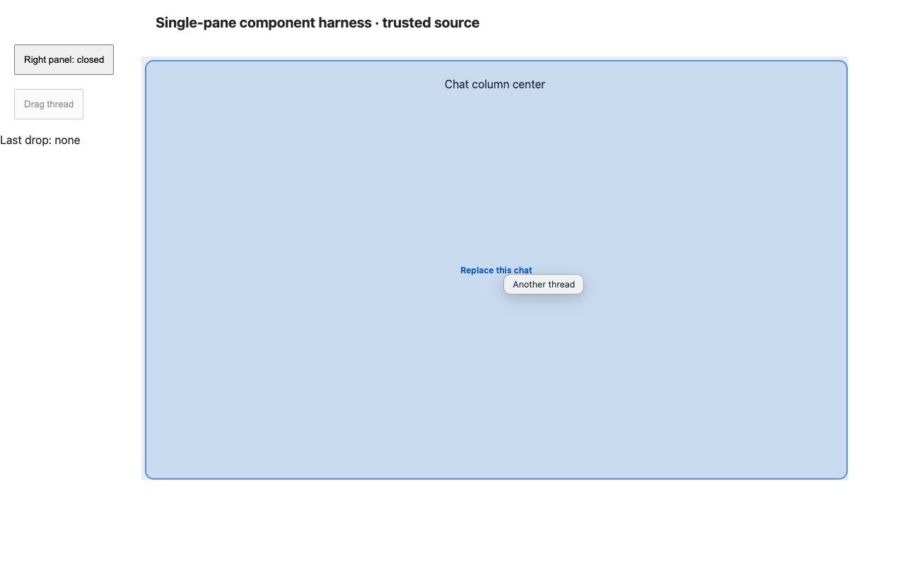
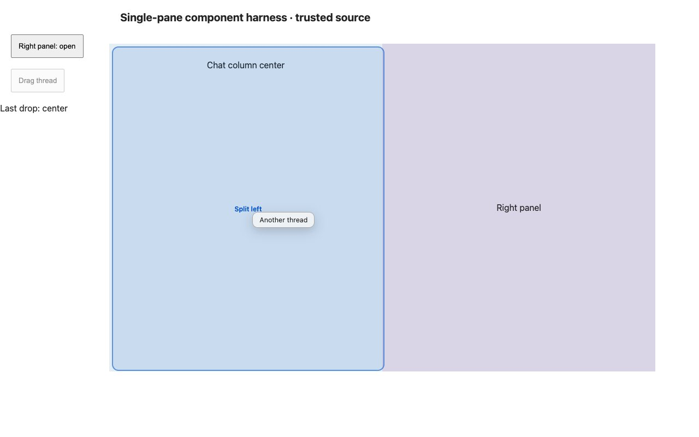
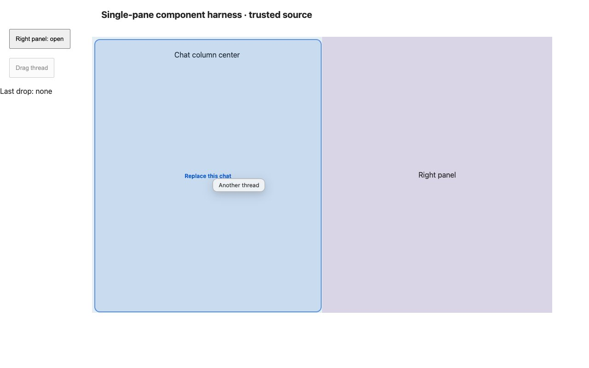

#3481 · Chat drop geometry includes the secondary panel
Bug · Priority Medium · Effort Low · ui
GitHub issue · 2026-09-11 · base fa1f44ebe9e5676004b669e48c99b3c7606466b6
REPRODUCED · Root-cause confidence: high
TL;DR
The single chat column does not identify itself as a split-drag target. The drag resolver therefore uses the workspace rectangle, which includes the open right panel. A drop halfway across the visible chat can consequently become a left-edge split. A source-component browser harness and a regression test reproduce this on the trusted base in two clean checkouts.
Claims vs findings
| Claim | Finding | Evidence |
|---|---|---|
| Panel visibility changes center-drop classification | Verified | Browser: closed center x=700 gives Replace this chat; open center x=450 gives Split left. |
| Single pane falls back to the whole workspace | Verified | Component DOM lacks the pane marker; production resolver uses supplied main fallback. |
| Multiple panes carry their own marker | Verified in source | SplitThreadArea pane wrapper; existing split-area and drag tests pass after patch. |
| Packaged desktop behavior | Not separately tested | No installed app, user store, or real threads accessed. |
Environment
macOS arm64, Node 22.22.3, repository-pinned pnpm 9.15.0 via Corepack. Frozen installs and Turbo builds succeeded in both clean worktrees. The installed pnpm launcher was broken; a temporary Corepack launcher supplied pnpm without modifying repository dependencies. Isolated Vite component harnesses used ports 49831 and 49832 and a fresh headless Chrome session. No core, daemon, provider, database, or imported store was started.
Minimal reproduction
- Check out trusted get-bb/bb at
fa1f44ebe9e5676004b669e48c99b3c7606466b6. - Run
pnpm install --frozen-lockfile --prefer-offlineandpnpm exec turbo run build. - Copy SecondaryPanelLayout.split-drag.test.tsx into
apps/app/src/components/secondary-panel/. - Run
pnpm exec turbo run test --filter=@bb/app -- src/components/secondary-panel/SecondaryPanelLayout.split-drag.test.tsx.
Expected: "Replace this chat" Received: "Split left" Test Files 1 failed (1) Tests 2 failed (2)
The open-panel assertion fails on the actual label. The closed-panel label passes, then the test also detects the absent target marker. The test uses the real SecondaryPanelLayout and beginSplitDrag with controlled DOM rectangles and the same fallback configuration as the sidebar hook.
For browser reproduction, copy repro-3481.html and repro-3481.tsx into apps/app/. From that directory run pnpm exec vite --config vite.config.ts --host 127.0.0.1 --port 49831 --strictPort on a free port. Open http://127.0.0.1:49831/repro-3481.html at 1280×800. Drag the Drag thread button to (700,380), release, open the right panel, then drag to (450,380). This uses real resizable panels, component rendering, pointer input, hit testing and drag overlays; the surrounding shell and thread drop callback are synthetic.


Regression test
// @vitest-environment jsdom
import { cleanup, fireEvent, render, screen } from "@testing-library/react";
import { afterEach, expect, it, vi } from "vitest";
import { CompactViewportOverrideProvider } from "@bb/shared-ui/hooks/use-compact-viewport";
import {
PaneContext,
type PaneContextValue,
} from "@/views/thread-detail/PaneContext";
import { beginSplitDrag, decideThreadDrop } from "@/lib/split-drag";
import { SecondaryPanelLayout } from "./SecondaryPanelLayout";
const noop = () => {};
const context: PaneContextValue = {
paneId: "pane-test",
isFocused: true,
isSplitPane: false,
secondaryPanelHost: null,
reservesWindowPanelToggle: false,
onRequestClose: null,
isMaximized: false,
onToggleMaximize: null,
isBoundedPane: false,
isTopRow: true,
ownsWindowTopLeft: true,
navigateInPane: noop,
};
afterEach(() => {
fireEvent(window, new Event("pointercancel"));
cleanup();
vi.restoreAllMocks();
vi.unstubAllGlobals();
});
it.each([false, true])(
"resolves a single chat's center with panel open=%s",
(open) => {
render(
<main data-testid="workspace">
<PaneContext.Provider value={context}>
<CompactViewportOverrideProvider isCompactViewport={false}>
<SecondaryPanelLayout
open={open}
onToggle={noop}
onClose={noop}
resetKey="test"
contentKey="test"
drawerLabel="Details"
drawerFallback={null}
mainPanelId="chat"
main={<div data-testid="chat">Chat</div>}
renderPanel={() => <div data-testid="details">Details</div>}
composerHost={null}
compactPresentation="shelf"
/>
</CompactViewportOverrideProvider>
</PaneContext.Provider>
</main>,
);
const workspace = screen.getByTestId("workspace");
const chat = screen.getByTestId("chat");
const width = open ? 500 : 1000;
vi.spyOn(HTMLElement.prototype, "getBoundingClientRect").mockImplementation(
function (this: HTMLElement) {
return new DOMRect(200, 0, this === workspace ? 1000 : width, 600);
},
);
const originalHitTest = Object.getOwnPropertyDescriptor(
document,
"elementsFromPoint",
);
Object.defineProperty(document, "elementsFromPoint", {
configurable: true,
value: () => [chat],
});
const onDrop = vi.fn();
beginSplitDrag({
ghostLabel: "Another thread",
fallback: { paneId: context.paneId, container: workspace },
shouldEngage: () => true,
decide: (_paneId, zone) =>
decideThreadDrop({ zone, threadAlreadyOpen: false, atMaxPanes: false }),
onDrop,
});
try {
fireEvent(
window,
new MouseEvent("pointermove", {
clientX: 200 + width / 2,
clientY: 300,
}),
);
expect(
document.querySelector("[data-split-drag-label]")?.textContent,
).toBe("Replace this chat");
fireEvent(window, new Event("pointerup"));
expect(onDrop).toHaveBeenCalledWith({
paneId: context.paneId,
zone: "center",
});
const target = chat.closest("[data-split-pane-id]");
expect(target?.contains(screen.getByTestId("details"))).toBe(false);
} finally {
if (originalHitTest)
Object.defineProperty(document, "elementsFromPoint", originalHitTest);
else Reflect.deleteProperty(document, "elementsFromPoint");
}
},
);
Root cause
singlePaneFallback supplies document.querySelector("main"). The one-pane branch renders WorkspacePaneContent without the multi-pane marker wrapper. SecondaryPanelLayout's mainContent also has no marker and is inside a panel group shared with the right panel. resolveTarget consequently measures the main fallback. pickZone uses the horizontal edge threshold of 0.28: the open chat center is 0.25 of the workspace, while the closed center is 0.5. The sidebar drop handler selects replacement only for center, explaining the different operation.
Proposed fix
Identify the inline main-content element with its existing pane context ID. The resolver then uses the chat column rectangle. Avoid nested markers for panels hosted by the multi-pane workspace. Preserve center replacement semantics. The patch adds three production lines and one focused test file.
Verification
Second clean checkout, unchanged production: 2 failed tests Patched checkout: 8 test files passed; 98 tests passed App typecheck: 4 Turbo tasks successful
The same agent repeated the regression in a second clean worktree, /tmp/slopcop-3481-secondary, at the recorded base commit with a separate frozen install and Turbo build. The same command failed with the same two assertions. A second Vite process on port 49832 repeated both browser cases; no application data directory was needed. The report required no conclusion correction.
After the patch in the first checkout, 98 relevant tests across 8 files passed, and the app typecheck passed. Browser input with the panel open now produces Replace this chat and the callback receives center. Full desktop integration and persisted thread mutation were not exercised.

Related issues and PRs
A GitHub timeline and open-PR search found no PR linked to #3481. Nearby issue metadata describes other pane behaviors; none was used as executable evidence.
Browser harness source
repro-3481.html
<!doctype html><html><head><title>Issue 3481 component reproduction</title><style>:root{--canvas:#eef2f5;--ink:#222;--primary:#0052cc;--popover:var(--canvas);--popover-foreground:var(--ink);--border:#aaa}body{margin:0;font:16px system-ui;color:#222}button{display:block;margin:20px;padding:12px}main{display:flex;position:absolute;left:200px;top:80px;width:1000px;height:600px;background:#eef2f5}.flex{display:flex}.flex-col{flex-direction:column}.flex-1{flex:1}.h-full{height:100%}.min-h-0{min-height:0}.min-w-0{min-width:0}.w-full{width:100%}.chat{height:100%;display:grid;align-items:start;justify-items:center;padding-top:30px;box-sizing:border-box;background:#e5eef5}.details{height:100%;display:grid;place-items:center;background:#dad5e6}h1{font-size:20px;margin:20px 220px}</style></head><body><div id="root"></div><script type="module" src="/repro-3481.tsx"></script></body></html>repro-3481.tsx
import React, {useState} from 'react';
import {createRoot} from 'react-dom/client';
import {Panel} from 'react-resizable-panels';
import {CompactViewportOverrideProvider} from '@bb/shared-ui/hooks/use-compact-viewport';
import {PaneContext, type PaneContextValue} from '@/views/thread-detail/PaneContext';
import {SecondaryPanelLayout} from '@/components/secondary-panel/SecondaryPanelLayout';
import {beginSplitDrag, decideThreadDrop} from '@/lib/split-drag';
const noop = () => {};
const context: PaneContextValue = {
paneId: "pane-test",
isFocused: true,
isSplitPane: false,
secondaryPanelHost: null,
reservesWindowPanelToggle: false,
onRequestClose: null,
isMaximized: false,
onToggleMaximize: null,
isBoundedPane: false,
isTopRow: true,
ownsWindowTopLeft: true,
navigateInPane: noop,
};
function App(){const [open,setOpen]=useState(false); const [drop,setDrop]=useState('none');return <><h1>Single-pane component harness · trusted source</h1><button id="toggle" onClick={()=>setOpen(!open)}>Right panel: {open?'open':'closed'}</button><button id="drag" onPointerDown={(e)=>beginSplitDrag({ghostLabel:'Another thread',sourceEl:e.currentTarget,fallback:{paneId:context.paneId,container:document.querySelector('main')},shouldEngage:()=>true,decide:(_id,zone)=>decideThreadDrop({zone,threadAlreadyOpen:false,atMaxPanes:false}),onDrop:target=>setDrop(target.zone)})}>Drag thread</button><p>Last drop: {drop}</p><main><PaneContext.Provider value={context}><CompactViewportOverrideProvider isCompactViewport={false}><SecondaryPanelLayout open={open} onToggle={noop} onClose={noop} resetKey="test" contentKey="test" drawerLabel="Details" drawerFallback={null} mainPanelId="chat" main={<div className="chat" id="chat">Chat column center</div>} renderPanel={()=> <Panel id="details" order={2} defaultSize={0} minSize={0}><div className="details">Right panel</div></Panel>} composerHost={null} compactPresentation="shelf"/></CompactViewportOverrideProvider></PaneContext.Provider></main></>}
createRoot(document.getElementById('root')!).render(<App/>);
Appendix
Repeatable evidence is included inline above; raw logs are retained locally.
pnpm exec turbo run test --filter=@bb/app -- src/components/secondary-panel/SecondaryPanelLayout src/components/sidebar/useThreadRowSplitDrag.test.tsx src/lib/split-drag src/views/thread-detail/SplitThreadArea pnpm exec turbo run typecheck --filter=@bb/app git diff --check
Trust boundary: issue suggestions were treated as untrusted claims. No issue-linked code, branches, scripts, or external links were fetched or executed. All executable application source came from trusted origin/main; the harness and patch were authored from repository evidence.
> AGENT GENERATED